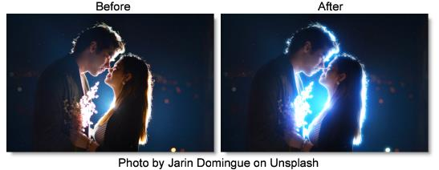

S_UltraGlow
Description
Generates a variety of glowing light from bright areas of the image utilizing a primary as well as secondary, after glow.
The S_UltraGlow filter comes from the Emmy award winning Boris FX Sapphire filter set.
Category
Light.
Controls
Presets
To select a preset, pick one from the Presets win\dow.
Primary Glow
Brightness
Scales the brightness of all the glows.
Color
Scales the color of the glows.
Threshold
Glows are generated from locations in the image that are brighter than this value. A value of 0.9 produces glows at only the brightest spots, while a value of 0 produces glows for every non−black area.
Threshold Add Color
This can be used to raise the threshold on a specific color and thereby reduce the glows generated on areas of the source clip containing that color.
Glow Width
Scales the glow distance. Note that a 0 glow width still enhances the bright areas. Set the brightness parameter to 0 if you want to pass the original image through unchanged.
Glow Falloff
Boost or cut the distance that the glow extends.
Glow Bias
Amount to grow the outskirts of the thresholded result, or shrink if negative.
Width X
Scales the horizontal glow width. Set to 0 for vertical only.
Width Y
Scales the vertical glow width. Set to 0 for horizontal only.
Width Red
Scales the red glow width. If the red, green, and blue widths are equal, the glows will match the color of the image. If they are not equal, the glows will vary in color with distance.
Width Green
Scales the green glow width.
Width Blue
Scales the blue glow width.
Subpixel
Enables glowing by subpixel widths.
Show
Selects the type of output.
Result
Shows the final result of combining the glow and image.
Threshold
Shows the thresholded image that is used to generate the glow.
After Glow
After Glow Width
Scales the glow distance of the secondary glow.
After Glow Color
Scales the color of the secondary glow.
After Glow Stretch X
Scales the horizontal secondary glow width.
After Glow Stretch Y
Scales the vertical secondary glow width.
Horizontal Streaks
Scales the appearance of narrow trails in the horizontal direction.
Vertical Streaks
Scales the appearance of narrow trails in the vertical direction.
Edges
Edge Detect
Enables edge detection.
Edge Combine
Determines how the detected edges are combined with the image.
Screen
Detected edges are blended with the image using a screen operation.
Add
Detected edges are added to the image.
Edges Only
The image is replaced with only the detected edges.
Edge Smooth
Increase for thicker and smoother edges.
Edge Mode
Determines the behavior when accessing areas outside the image.
Transparent
Areas outside the image are treated as transparent which can produce transparency around the edges of the image. Select this for fastest rendering.
Reflect
Reflects the image outside the border.
Atmosphere
Atmosphere gives the effect of the glow shining through a dusty atmosphere and picking up light or getting shadowed.
Atmosphere
Enables/disables the atmosphere layer.
Atmosphere Amp
Adjusts the amount, or amplitude, of the atmospheric effect. 0 gives a smooth glow, higher values give more dusty look.
Atmosphere Freq
Controls the spatial frequency of the atmospheric noise. Turn this up to get finer details or turn down for broader overall variation.
Atmosphere Detail
Controls the amount of fine detail in the atmosphere simulation. Decrease to get smoother atmosphere or increase for a more crunchy or grainy look.
Atmosphere Lights
Scales the highlights. Increase for a more intense result.
Atmosphere Darks
Scales the blacks. Increase for a more subtle result.
Atmosphere Seed
Used to initialize the random number generator for the atmospheric noise. The actual seed value is not significant, but different seeds produce different results and the same value should give a repeatable result.
Apply Pre-Glow
Combines the atmosphere with the image prior to any glows.
Highlights
Highlights
Enables highlights using an electrical plasma texture.
Highlights Freq
The spatial frequency of the highlights. Increase to zoom out or decrease to zoom in.
Highlights Freq Rel X
The relative horizontal frequency of the highlights. Increase to stretch vertically or decrease to stretch horizontally.
Highlights Octaves
The number of octaves of highlights to include. Each octave is twice the frequency and half the amplitude of the previous.
Highlights Grad X
Determines the amplitude and direction of a gradient which orients the highlights. Increasing X makes them more vertical.
Highlights Grad Y
Determines the amplitude and direction of a gradient which orients the highlights. Increasing Y makes them more horizontal.
Highlights Layers
The number of layers of highlights. Increase for a more striped effect.
Highlights Threshold
Determines the thickness of the highlights. Increase for thinner lines or decrease for thicker and brighter ones.
Highlights Brightness
Scales the brightness of the highlights.
Highlights Lights
Scales the highlights. Increase for a more intense result.
Highlights Darks
Scales the blacks. Increase for a more subtle result.
Highlights Blur
Soften the edges of the highlights.
Composite
Combine
Determines how the glow is combined with the image. This parameter has no effect if Light Background is set to 1.
Mult
The image is multiplied by the glow.
Add
The glow is added to the image.
Screen
The glow is blended with the image using a screen operation.
Difference
The result is the difference between the glow and the image.
Overlay
The glow is combined with the image using an overlay function.
Glow From Alpha
Generate glows from the alpha channel instead of the RGB channels. In this case, the glows will not pick up color from the image and will typically be brighter. Values between 0 and 1 interpolate between using the RGB and the alpha.
Glow Under Source
Composites the image over the glows.
Light Background
Increase this to give a look of the glow casting light onto the background image. To see this more clearly, you can lower the Scale Background parameter or raise the Brightness parameter.
Source Opacity
Scales the opacity of the image when combined with the glows. This does not affect the generation of the glows themselves.
Expand Borders
If enabled, transparent borders are added to the image before processing. This allows the result to include soft edges beyond the original image size. When off, the effect only occurs within the frame and the result will retain an edge at the borders.
Show Glow Width
Enables/disables the on-screen control for adjusting the Glow.